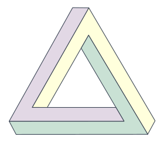
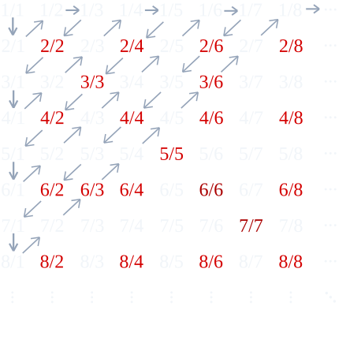
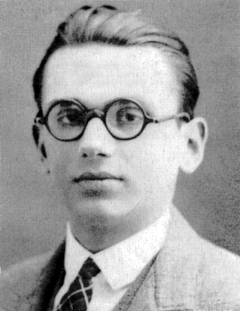
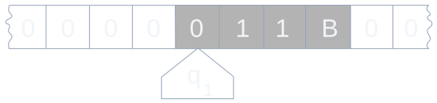
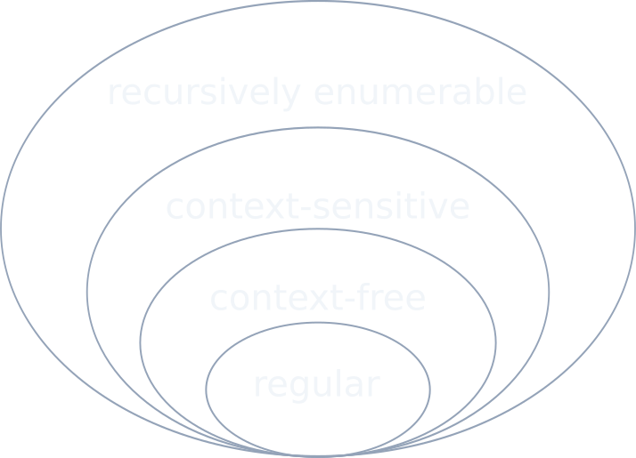
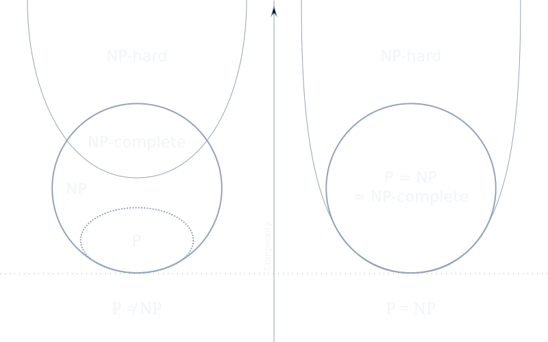

Kapitel 1
Der Barbier, der sich nicht rasieren darf
Stell dir ein Dorf vor, in dem es genau einen Barbier gibt. Er rasiert alle Männer des Dorfes, die sich nicht selbst rasieren – und nur diese. Einfache Regel. Aber jetzt die Frage: Rasiert der Barbier sich selbst?
Wenn er sich selbst rasiert, gehört er zu denen, die sich selbst rasieren – also dürfte er sich nicht rasieren. Wenn er sich nicht rasiert, gehört er zu denen, die sich nicht selbst rasieren – also müsste er sich rasieren. In beiden Fällen ein Widerspruch. Die Regel, die so harmlos klingt, ist logisch unmöglich.
Das ist kein billiger Trick. Das ist die populäre Version eines Erdbebens, das 1901 die Grundlagen der Mathematik erschütterte.
Russells Paradoxon
Bertrand Russell formulierte das Problem in der Sprache der Mengenlehre. Betrachte die Menge aller Mengen, die sich nicht selbst als Element enthalten:
Ist \(R \in R\)? Wenn ja, dann erfüllt \(R\) die Bedingung \(R \notin R\) – Widerspruch. Wenn nein, dann erfüllt \(R\) gerade die Bedingung für die Zugehörigkeit – also \(R \in R\) – wieder Widerspruch. Die naive Mengenlehre, auf der die gesamte Mathematik zu ruhen schien, war inkonsistent.

Der Lügner und die Tradition der Selbstbezüglichkeit
Russells Paradoxon hat einen älteren Bruder. Schon der Kreter Epimenides soll gesagt haben: „Alle Kreter sind Lügner.“ Wenn er die Wahrheit sagt, lügt er. Wenn er lügt, sagt er vielleicht die Wahrheit. Die scharfe Fassung ist das Lügner-Paradoxon:
„Dieser Satz ist falsch.“
Wenn er wahr ist, ist er falsch. Wenn er falsch ist, ist er wahr. Kein Ausweg. Der Lügner ist seit der Antike bekannt, aber erst Russell machte klar, dass dieses Muster – Selbstbezüglichkeit, die zur Negation führt – nicht bloß ein Kuriosum ist, sondern die Fundamente der Mathematik bedroht.
Freges Verzweiflung
Am härtesten traf es Gottlob Frege. Er hatte gerade sein Lebenswerk vollendet: die Grundgesetze der Arithmetik, in denen er die gesamte Mathematik auf logische Grundlagen stellte. Band 2 war im Druck, als im Juni 1902 ein Brief von Russell eintraf. Frege erkannte sofort die Tragweite. Er schrieb zurück:
„Ihre Entdeckung des Widerspruchs hat mich auf das Höchste überrascht und, fast möchte ich sagen, bestürzt, weil dadurch der Grund, auf dem ich die Arithmetik sich aufzubauen dachte, ins Wanken geräth.“ — Gottlob Frege, Brief an Russell, 22. Juni 1902
Frege fügte dem bereits gedruckten Band einen Anhang hinzu, in dem er zugab, dass die Grundlage seines Systems zerstört war. Es ist einer der bewegendsten Momente der Wissenschaftsgeschichte: ein Gelehrter, der sein Lebenswerk scheitern sieht und trotzdem die intellektuelle Ehrlichkeit besitzt, den Fehler öffentlich einzugestehen.

Die Rettungsversuche
Nach Russell versuchten Mathematiker, die Mengenlehre zu reparieren. Russell selbst entwickelte mit Whitehead die Principia Mathematica und eine Typentheorie, die Selbstbezüglichkeit verbietet, indem Mengen in Ebenen eingeteilt werden: Eine Menge der Stufe \(n\) darf nur Elemente der Stufe \(n-1\) enthalten. Zermelo und Fraenkel schufen das Axiomensystem ZFC, das durch sorgfältige Axiome die Bildung widersprüchlicher Mengen verhindert.
Die Selbstbezüglichkeit war gebannt – vorläufig. Aber sie würde zurückkehren, in einer weit tiefgründigeren Form.
Zwischenstand: Selbstbezüglichkeit + Negation = Paradoxon. Russell zeigte, dass die naive Mengenlehre inkonsistent ist. Die Mathematik brauchte neue Fundamente – und David Hilbert hatte einen Plan.
Kapitel 2
Cantors Diagonalargument
Bevor Gödel die Mathematik erschütterte, hatte ein anderer Mathematiker bereits das Unendliche revolutioniert. Georg Cantor stellte 1891 eine scheinbar einfache Frage: Gibt es verschiedene Größen von Unendlichkeit?
Die Antwort ist ja – und der Beweis ist einer der elegantesten der gesamten Mathematik. Er benutzt eine Technik, die wir in diesem Blogpost noch dreimal wiedersehen werden: die Diagonalisierung.
Abzählbar vs. überabzählbar
Eine Menge heißt abzählbar, wenn man ihre Elemente durchnummerieren kann – wenn es also eine Bijektion zu den natürlichen Zahlen \(\mathbb{N} = \{1, 2, 3, \ldots\}\) gibt. Die ganzen Zahlen \(\mathbb{Z}\) sind abzählbar (man nummeriert sie als \(0, 1, -1, 2, -2, \ldots\)). Sogar die rationalen Zahlen \(\mathbb{Q}\) sind abzählbar – das zeigt Cantors erstes Diagonalargument mit dem „Zickzack“ durch die Bruch-Tabelle.
Aber was ist mit den reellen Zahlen \(\mathbb{R}\)?
Der Beweis: Schritt für Schritt
Cantor führt einen Widerspruchsbeweis. Angenommen, die reellen Zahlen zwischen 0 und 1 wären abzählbar. Dann könnte man sie in eine Liste schreiben:
| # | Stelle 1 | Stelle 2 | Stelle 3 | Stelle 4 | Stelle 5 | ... |
|---|---|---|---|---|---|---|
| 1 | 5 | 1 | 3 | 0 | 7 | ... |
| 2 | 8 | 0 | 4 | 9 | 2 | ... |
| 3 | 2 | 3 | 6 | 1 | 8 | ... |
| 4 | 4 | 7 | 2 | 5 | 3 | ... |
| 5 | 9 | 4 | 1 | 8 | 6 | ... |
Die rot hervorgehobenen Ziffern bilden die Diagonale: 5, 0, 6, 5, 6. Jetzt konstruiert Cantor eine neue Zahl \(d\), indem er jede Diagonalziffer verändert (z.B. \(5 \to 6\), \(0 \to 1\), \(6 \to 7\), \(5 \to 6\), \(6 \to 7\)):
Diese Zahl \(d\) unterscheidet sich von der 1. Zahl in der 1. Stelle, von der 2. Zahl in der 2. Stelle, von der \(n\)-ten Zahl in der \(n\)-ten Stelle. Also ist \(d\) in keiner Zeile der Liste enthalten. Widerspruch zur Annahme, die Liste sei vollständig.
Es gibt mehr reelle Zahlen als natürliche Zahlen. Die Unendlichkeit der reellen Zahlen ist überabzählbar – eine echt größere Unendlichkeit. Cantor nannte die Mächtigkeit von \(\mathbb{N}\) das Aleph-Null (\(\aleph_0\)) und die von \(\mathbb{R}\) das Kontinuum (\(\mathfrak{c} = 2^{\aleph_0}\)).

Das Muster der Diagonalisierung
Die Beweisstruktur ist es wert, explizit festgehalten zu werden, denn sie wird wiederkehren:
- Annahme: Es gibt eine vollständige Aufzählung.
- Konstruktion: Bilde ein neues Objekt, das sich von jedem aufgezählten Objekt in mindestens einem Aspekt unterscheidet.
- Widerspruch: Das neue Objekt hätte in der Liste sein müssen, ist es aber nicht.
- Schluss: Die Annahme war falsch.
Dieses Schema ist der Generalschlüssel zu den tiefsten Resultaten der Logik. Russell benutzte es für Mengen, Gödel für Beweise, Turing für Programme.
Probier es selbst
Versuche, eine Liste reeller Zahlen zu erstellen, die „alles“ enthält. Die Visualisierung zeigt dir in Echtzeit die Diagonalzahl, die garantiert nicht in deiner Liste steht.
Zwischenstand: Cantor bewies 1891, dass es mehr reelle Zahlen als natürliche gibt – mit einer Diagonaltechnik, die zum Grundmuster der Unmöglichkeitsbeweise wurde. Diese Technik werden Russell, Gödel und Turing auf je eigene Weise wieder aufgreifen.
Kapitel 3
Gödels Geniestreich
Nach der Krise um Russells Paradoxon hatte David Hilbert einen ehrgeizigen Plan. Sein Programm, verkündet 1921 und präzisiert 1928, lautete:
- Finde ein vollständiges Axiomensystem für die Mathematik (jede wahre Aussage ist beweisbar).
- Zeige, dass dieses System widerspruchsfrei ist (man kann nicht sowohl \(A\) als auch \(\neg A\) beweisen).
- Finde ein Entscheidungsverfahren (einen Algorithmus, der für jede Aussage sagt, ob sie wahr oder falsch ist).
Hilbert war überzeugt, dass all das erreichbar war. Sein berühmtes Motto: „Wir müssen wissen – wir werden wissen!“ Dann kam Kurt Gödel.
Gödelnummern: Mathematik über Mathematik
Gödels Kernidee, 1931 veröffentlicht, war so einfach wie revolutionär: Er brachte die Mathematik dazu, über sich selbst zu reden. Der Trick: Jedes Symbol, jede Formel, jeder Beweis wird als natürliche Zahl codiert – eine Gödelnummer.
Die Codierung funktioniert über Primzahlpotenzen. Jedes Symbol bekommt eine Nummer:
| Symbol | Code |
|---|---|
| 0 | 1 |
| S | 3 |
| = | 5 |
| ( | 7 |
| ) | 9 |
| + | 11 |
| × | 13 |
Die Formel 0 = 0 hat drei Symbole mit den Codes 1, 5, 1. Ihre Gödelnummer ist:
Für die Formel S(0) = S(0) mit den Codes 3, 7, 1, 9, 5, 3, 7, 1, 9 wird die Zahl riesig:
Jede Formel der Arithmetik wird so zu einer eindeutigen natürlichen Zahl. Und Aussagen über Formeln – „Formel \(x\) ist beweisbar“, „Formel \(x\) ist ein Axiom“ – werden zu Aussagen über natürliche Zahlen. Die Arithmetik kann über sich selbst reden.

Der Satz G: „Ich bin nicht beweisbar“
Gödel konstruiert nun einen speziellen Satz \(G\), der – wenn man die Gödelnummern zurückübersetzt – sagt:
„Der Satz mit der Gödelnummer g ist nicht beweisbar.“
Und \(g\) ist – Selbstbezüglichkeit! – genau die Gödelnummer von \(G\) selbst. Der Satz sagt also:
„Ich bin nicht beweisbar.“
Vergleiche das mit dem Lügner-Paradoxon „Dieser Satz ist falsch“. Gödel ersetzt „falsch“ durch „nicht beweisbar“ – und genau das macht den Unterschied. Denn „nicht beweisbar“ ist nicht dasselbe wie „falsch“.
Der erste Unvollständigkeitssatz
Jetzt das Argument:
- Angenommen, \(G\) ist beweisbar. Dann wäre die Aussage „Ich bin nicht beweisbar“ falsch – also wäre \(\neg G\) wahr. Wenn das System korrekt ist (nur Wahres beweist), haben wir einen Widerspruch.
- Also ist \(G\) nicht beweisbar. Aber genau das sagt \(G\). Also ist \(G\) wahr.
- Ergebnis: \(G\) ist wahr, aber nicht beweisbar. Das System ist unvollständig.
Formal:
Das gilt für jedes hinreichend mächtige, konsistente, rekursiv axiomatisierbare formale System. Man kann \(G\) nicht „reparieren“, indem man es als neues Axiom hinzufügt – dann gibt es sofort ein neues \(G'\) im erweiterten System.
Probier es selbst
Gib eine Formel in der Sprache der Arithmetik ein und sieh, wie die Gödelnummer berechnet wird. Experimentiere mit verschiedenen Formeln und beobachte, wie schnell die Zahlen wachsen.
Zwischenstand: Gödel bewies 1931, dass jedes hinreichend mächtige konsistente Axiomensystem wahre Sätze enthält, die es nicht beweisen kann. Der Schlüssel: Selbstbezüglichkeit durch Gödelnummern – eine Diagonalisierung im Raum der Beweise. Hilberts Punkt 1 (Vollständigkeit) war erledigt. Aber es kam noch schlimmer.
Kapitel 4
Der zweite Schlag
Der erste Unvollständigkeitssatz war schon verheerend genug. Aber Gödel hatte einen Nachschlag.
Der zweite Unvollständigkeitssatz
Gödels zweites Theorem besagt: Ein konsistentes System, das mächtig genug ist, kann seine eigene Konsistenz nicht beweisen.
Wobei \(\text{Con}(F)\) die formalisierte Aussage „\(F\) ist widerspruchsfrei“ ist. Der Beweis zeigt, dass \(\text{Con}(F)\) logisch äquivalent zu \(G\) ist: Wenn das System konsistent ist, ist \(G\) wahr (nicht beweisbar). Und wenn \(G\) wahr ist, dann hat das System nie einen Widerspruch abgeleitet – also ist es konsistent. Daher:
Und da \(G\) nicht beweisbar ist (erster Satz), ist auch \(\text{Con}(F)\) nicht beweisbar.
Das war der Todessstoß für Hilberts Programm. Punkt 2 – die Widerspruchsfreiheit der Mathematik innerhalb der Mathematik beweisen – war prinzipiell unmöglich.

Drei Tage zu spät: von Neumann
Eine der bemerkenswertesten Fußnoten der Mathematikgeschichte: John von Neumann, damals bereits als Genie anerkannt, arbeitete unabhängig von Gödel an ähnlichen Fragen. Als Gödel am 7. September 1930 in Königsberg den ersten Unvollständigkeitssatz präsentierte, war von Neumann der Einzige im Publikum, der die Tragweite sofort erkannte.
Von Neumann ging nach Hause und begann fieberhaft zu arbeiten. Wenige Wochen später schrieb er an Gödel, dass er den zweiten Unvollständigkeitssatz entdeckt habe. Gödels Antwort: Er habe das Ergebnis bereits eingereicht. Von Neumann, mit der für ihn typischen Großzügigkeit, zog seine eigene Arbeit zurück und wurde zu einem lebenslangen Befürworter von Gödels Werk.
Was übrig bleibt
Gödels Sätze bedeuten nicht, dass Mathematik sinnlos oder beliebig ist. Sie bedeuten:
- Kein endliches Regelsystem kann alle mathematischen Wahrheiten einfangen.
- Mathematische Wahrheit ist reicher als formale Beweisbarkeit.
- Wir können die Widerspruchsfreiheit unserer Grundlagen nicht aus sich selbst heraus garantieren.
Von Hilberts drei Zielen war nun das erste (Vollständigkeit) und das zweite (Konsistenzbeweis) erledigt. Es blieb das dritte: das Entscheidungsproblem. Dafür brauchte die Welt einen präzisen Begriff von „Algorithmus“. Und den lieferte Alan Turing.
Zwischenstand: Gödels zweiter Satz zerstörte Hilberts Hoffnung auf einen Konsistenzbeweis. Die Mathematik kann sich nicht selbst für widerspruchsfrei erklären. Von drei Hilbert-Zielen waren zwei gefallen. Das dritte – das Entscheidungsproblem – wartete auf Turing.
Kapitel 5
Turings Halteproblem
1936. Alan Turing ist 24 Jahre alt, Doktorand in Cambridge. Er greift Hilberts drittes Ziel an: das Entscheidungsproblem. Gibt es ein allgemeines Verfahren, das für jede mathematische Aussage entscheidet, ob sie beweisbar ist?
Um die Frage überhaupt präzise stellen zu können, muss Turing erst definieren, was ein „mechanisches Verfahren“ ist. Seine Antwort: die Turingmaschine.
Die Turingmaschine
Eine Turingmaschine ist ein abstraktes Rechenmodell von bestechender Einfachheit:
- Ein unendlich langes Band, unterteilt in Zellen, jede mit einem Symbol beschrieben (oder leer).
- Ein Lese-/Schreibkopf, der sich auf dem Band bewegt.
- Eine endliche Menge von Zuständen.
- Eine Übergangsfunktion: Abhängig vom aktuellen Zustand und dem gelesenen Symbol schreibt die Maschine ein neues Symbol, bewegt den Kopf nach links oder rechts und wechselt den Zustand.

Turing bewies (und Church unabhängig mit dem Lambda-Kalkül), dass dieses einfache Modell jede Berechnung ausführen kann, die irgendein Computer ausführen kann. Das ist die Church-Turing-These: Die intuitiv berechenbaren Funktionen sind genau die turingberechenbaren Funktionen.
Das Halteproblem
Turing formuliert jetzt eine scheinbar harmlose Frage: Gibt es eine Turingmaschine \(H\), die für jede Turingmaschine \(M\) und jede Eingabe \(x\) entscheidet, ob \(M\) bei Eingabe \(x\) jemals anhält?
Turings Antwort: Nein. Und sein Beweis benutzt – natürlich – Diagonalisierung.
Der Beweis: D(D)
Angenommen, \(H\) existiert. Dann bauen wir eine neue Maschine \(D\) („Diagonalmaschine“):
- \(D\) bekommt als Eingabe eine Turingmaschine \(M\).
- \(D\) fragt \(H\): Hält \(M\) bei Eingabe \(M\) (also bei sich selbst)?
- Wenn \(H\) „ja“ sagt: \(D\) läuft endlos weiter.
- Wenn \(H\) „nein“ sagt: \(D\) hält sofort.
Jetzt die tödliche Frage: Was passiert bei \(D(D)\)?
- Wenn \(D(D)\) hält, dann hat \(H\) gesagt „\(D(D)\) hält“, also läuft \(D\) endlos – Widerspruch.
- Wenn \(D(D)\) nicht hält, dann hat \(H\) gesagt „\(D(D)\) hält nicht“, also hält \(D\) – Widerspruch.
In beiden Fällen ein Widerspruch. Also kann \(H\) nicht existieren. Das Halteproblem ist unentscheidbar.

Die Verbindung zu Cantor
Der Beweis hat exakt dieselbe Struktur wie Cantors Diagonalargument:
| Cantor | Turing |
|---|---|
| Liste aller reellen Zahlen | Liste aller Turingmaschinen |
| \(n\)-te Dezimalstelle der \(n\)-ten Zahl | \(M_n\) angewandt auf \(M_n\) |
| Ziffer ändern | Verhalten umkehren (halten ↔ endlos) |
| Neue Zahl nicht in der Liste | Neues Programm widerspricht der Annahme |
Turing hat Cantors Argument in die Welt der Programme übersetzt. Die Überabzählbarkeit der reellen Zahlen und die Unentscheidbarkeit des Halteproblems sind zwei Seiten derselben Medaille.
Probier es selbst
Simuliere eine einfache Turingmaschine Schritt für Schritt. Beobachte, wie manche Programme halten und andere endlos weiterlaufen – und warum kein Algorithmus das im Voraus für alle Programme entscheiden kann.
Zwischenstand: Turing bewies 1936, dass kein Algorithmus für alle Programme entscheiden kann, ob sie halten. Hilberts drittes Ziel – das Entscheidungsproblem – war gefallen. Der Beweis benutzt Diagonalisierung, genau wie Cantors Beweis von 1891. Die drei Hilbert-Ziele: alle drei unmöglich.
Kapitel 6
Die Hierarchie des Berechenbaren
Turings Halteproblem zeigt eine absolute Grenze: Es gibt Probleme, die kein Computer lösen kann. Aber unterhalb dieser Grenze gibt es eine reiche Landschaft. Nicht alle lösbaren Probleme sind gleich schwer, und die Informatik hat eine elegante Hierarchie entdeckt, die verschiedene Berechnungsmodelle nach ihrer Mächtigkeit ordnet.
Die Chomsky-Hierarchie
Noam Chomsky klassifizierte 1956 formale Sprachen in vier Typen, die sich in ihrer Komplexität unterscheiden:

| Typ | Sprache | Automat | Beispiel |
|---|---|---|---|
| 3 | Regulär | Endlicher Automat (DFA) | a*b+ |
| 2 | Kontextfrei | Kellerautomat (PDA) | anbn |
| 1 | Kontextsensitiv | Linear beschränkter Automat | anbncn |
| 0 | Rekursiv aufzählbar | Turingmaschine | Halteproblem |
Jede Stufe ist echt mächtiger als die vorherige. Ein endlicher Automat hat kein Gedächtnis – er kann nicht zählen, wie oft etwas vorgekommen ist. Ein Kellerautomat hat einen Stack – er kann zählen, aber nur „eine Sache auf einmal“. Eine Turingmaschine hat ein unbegrenztes Band – sie kann alles, was berechenbar ist.
Das Pumping-Lemma: Beweisen, dass etwas nicht geht
Wie beweist man, dass eine Sprache nicht regulär ist? Mit dem Pumping-Lemma, einem der schönsten Werkzeuge der theoretischen Informatik.
Die Idee: Wenn ein DFA mit \(p\) Zuständen ein Wort der Länge \(\geq p\) akzeptiert, muss er auf dem Weg mindestens einen Zustand zweimal besuchen (Schubfachprinzip!). Der Abschnitt zwischen den beiden Besuchen ist eine Schleife, die man beliebig oft wiederholen („pumpen“) kann:
Betrachte die Sprache \(L = \{a^n b^n \mid n \geq 0\}\). Wenn sie regulär wäre, könnte man in \(w = a^p b^p\) den Teil \(y\) (der nur aus \(a\)s besteht, weil \(|xy| \leq p\)) pumpen. Aber \(a^{p+k}b^p \notin L\) für \(k > 0\). Widerspruch. Also ist \(\{a^n b^n\}\) nicht regulär – man braucht mindestens einen Kellerautomaten.
P vs. NP: Die Millionen-Dollar-Frage
Innerhalb der berechenbaren Probleme gibt es eine weitere, berühmte Trennlinie: die zwischen effizient lösbar und effizient überprüfbar.

- P = Probleme, die in polynomialer Zeit lösbar sind. Beispiel: Sortieren, kürzester Pfad.
- NP = Probleme, deren Lösung in polynomialer Zeit überprüfbar ist. Beispiel: Sudoku (schwer zu lösen, leicht zu prüfen).
- NP-vollständig = Die „schwersten“ Probleme in NP. Wenn eines davon in P liegt, dann alle. Beispiel: das Erfüllbarkeitsproblem (SAT), das Handlungsreisendenproblem.
Die Frage \(\mathbf{P \stackrel{?}{=} NP}\) ist eines der Millennium-Probleme des Clay-Instituts – mit einem Preisgeld von einer Million Dollar. Die meisten Informatiker vermuten \(P \neq NP\), aber ein Beweis fehlt seit über 50 Jahren.
Die Verbindung zu Gödel ist tief: Auch hier geht es um die Frage, ob das Finden einer Lösung grundsätzlich schwerer ist als das Verifizieren. Gödel selbst stellte diese Frage 1956 in einem Brief an von Neumann – zwei Jahrzehnte bevor Cook und Levin sie formalisierten.
Probier es selbst
Experimentiere mit verschiedenen Automatentypen. Baue einen DFA, der eine reguläre Sprache erkennt, und sieh, wie er an kontextfreien Sprachen scheitert. Beobachte, wie ein Kellerautomat mit seinem Stack zählen kann.
Zwischenstand: Unterhalb der Berechenbarkeitsgrenze gibt es eine reiche Hierarchie. Endliche Automaten, Kellerautomaten und Turingmaschinen bilden streng geschachtelte Mächtigkeitsstufen. Die Frage P vs. NP fragt, ob es innerhalb des Berechenbaren eine weitere fundamentale Grenze gibt – und ist seit 50 Jahren unbeantwortet.
Kapitel 7
Selbstbezüglichkeit überall
Wir haben nun vier Giganten der Logik kennengelernt: Cantor, Russell, Gödel, Turing. Jeder nutzte ein ähnliches Muster. Halten wir das fest:
| Denker | Objekt | Selbstbezug | Resultat |
|---|---|---|---|
| Cantor (1891) | Reelle Zahlen | Diagonalzahl widerspricht jeder Zeile | \(\mathbb{R}\) ist überabzählbar |
| Russell (1901) | Mengen | Menge aller Nicht-Selbst-Elemente | Naive Mengenlehre inkonsistent |
| Gödel (1931) | Beweise | „Ich bin nicht beweisbar“ | Unvollständigkeit |
| Turing (1936) | Programme | \(D(D)\) widerspricht dem Halte-Orakel | Halteproblem unentscheidbar |
In jedem Fall ist der Kern: Ein System, das mächtig genug ist, über sich selbst zu reden, stößt auf Grenzen, die es nicht überwinden kann.
Quines: Programme, die sich selbst ausgeben
Selbstbezüglichkeit muss nicht zur Zerstörung führen. Ein Quine ist ein Programm, das seinen eigenen Quellcode ausgibt – ohne eine Datei zu lesen. In Python:
s='s=%r;print(s%%s)';print(s%s)Quines sind keine Spielerei. Ihre Existenz folgt aus dem Rekursionssatz (Kleenes Fixpunktsatz): Für jede berechenbare Transformation \(t\) gibt es ein Programm \(e\), das sich genau so verhält wie \(t\) angewandt auf \(e\)s eigenen Quellcode. Formal:
Der Rekursionssatz ist das konstruktive Gegenstück zu Gödels Satz: Gödel baut einen Satz, der über sich selbst redet; der Rekursionssatz garantiert, dass jede Selbstbezüglichkeit konstruierbar ist.
DNA: Biologische Selbstbezüglichkeit
Die Natur hat das Quine-Prinzip längst entdeckt. DNA ist ein Molekül, das die Anweisungen zu seiner eigenen Reproduktion enthält. Genauer: DNA codiert Proteine, und einige dieser Proteine (DNA-Polymerase, Helicase, Primase) sind genau die Maschinen, die die DNA kopieren. Das ist ein biologischer Quine – ein Programm, das sich selbst reproduziert.
Von Neumann erkannte diese Parallele bereits in den 1940ern, als er seine Theorie selbstreproduzierender Automaten entwickelte – Jahre bevor Watson und Crick die DNA-Struktur entschlüsselten. Er bewies, dass ein universeller Konstruktor möglich ist: eine Maschine, die jede andere Maschine bauen kann, einschließlich einer Kopie ihrer selbst.
Gödel, Escher, Bach
Douglas Hofstadter widmete diesen Verbindungen 1979 ein ganzes Buch: Gödel, Escher, Bach: ein Endloses Geflochtenes Band. Sein zentrales Argument: Selbstbezüglichkeit ist nicht nur ein Kuriosum der Logik, sondern der Mechanismus, aus dem Bewusstsein entsteht. Ein Gehirn, das über sich selbst nachdenken kann – ein „seltsame Schleife“ (strange loop) – ist die Grundlage des Ich-Erlebens.
Diese These verbindet unseren Blogpost direkt mit zwei anderen Themen dieses Blogs:
- Eigenwerte: In der Eigenwert-Post haben wir gesehen, dass Eigenvektoren die „Richtungen“ sind, die eine Transformation überleben. Gödels Satz \(G\) ist in gewissem Sinne ein „Eigenwert“ des Beweissystems: ein Fixpunkt der Gödelnummerierung, der das System an seine Grenzen führt.
- Emergenz: In der Emergenz-Post fragten wir, wie aus einfachen Regeln komplexes Verhalten entsteht. Die Chomsky-Hierarchie zeigt, dass mehr Speicher (vom DFA über den PDA zur TM) qualitativ neue Fähigkeiten ermöglicht – eine Form von Emergenz in der Berechenbarkeit.
- Quantenmechanik: In der Quanten-Post sahen wir, dass Messung das System verändert. Gödels Unvollständigkeit hat eine ähnliche Struktur: Der Versuch, das System vollständig zu beschreiben, erzeugt neue, unbeschreibbare Wahrheiten.
Probier es selbst
Erkunde die Verbindungen zwischen den vier Diagonalisierungsargumenten. Die Visualisierung zeigt, wie dasselbe Muster in verschiedenen Domänen auftaucht – und wie Selbstbezüglichkeit von der Mathematik über Biologie bis zur Künstlichen Intelligenz reicht.
Zwischenstand: Cantor, Russell, Gödel und Turing entdeckten alle dasselbe Muster: Selbstbezüglichkeit erzeugt Grenzen. Aber Selbstbezüglichkeit erzeugt auch Schöpfung: Quines, DNA-Replikation, Bewusstsein. Der Fixpunktsatz von Kleene ist das mathematische Fundament beider Seiten.
Epilog
Wir müssen wissen. Wir werden wissen?
Am 8. September 1930 – einen Tag nach Gödels Vortrag in Königsberg – hielt David Hilbert seine Abschiedsrede als Präsident der Gesellschaft Deutscher Naturforscher und Ärzte. Er schloss mit den Worten:
„Wir müssen wissen. Wir werden wissen.“ — David Hilbert, Königsberg, 8. September 1930
Diese Worte stehen auf seinem Grabstein in Göttingen. Er wusste zu diesem Zeitpunkt nicht, dass Gödel am Tag zuvor sein Programm widerlegt hatte. Es ist eine der bitterstensten Ironien der Wissenschaftsgeschichte.
Aber Hilbert lag nicht völlig falsch. Wir können zwar nicht alles wissen, aber wir können wissen, was wir nicht wissen können – und das ist vielleicht das tiefere Wissen.
BB(5): Die Grenze berühren
Ein konkretes Beispiel für die Berührung mit dem Unberechenbaren: die Busy-Beaver-Funktion \(\text{BB}(n)\). Sie fragt: Was ist die maximale Anzahl von Einsen, die eine haltende Turingmaschine mit \(n\) Zuständen auf ein leeres Band schreiben kann?
Diese Funktion wächst schneller als jede berechenbare Funktion. Sie ist nicht berechenbar – denn wenn sie es wäre, könnte man das Halteproblem lösen. Für kleine Werte kennen wir sie:
| \(n\) | \(\text{BB}(n)\) | Status |
|---|---|---|
| 1 | 1 | bewiesen |
| 2 | 4 | bewiesen |
| 3 | 6 | bewiesen |
| 4 | 13 | bewiesen |
| 5 | 47.176.870 | bewiesen (2024) |
| 6 | > 10↑↑15 | offen |
Im Juli 2024 gelang es dem Projekt bb(5), den Wert \(\text{BB}(5) = 47{.}176{.}870\) zu beweisen – mithilfe des Beweisassistenten Coq. Für \(\text{BB}(6)\) ist die untere Schranke bereits so groß, dass sie sich nicht einmal in normaler Notation aufschreiben lässt (die Pfeilnotation \(10 \uparrow\uparrow 15\) bedeutet ein Potenzturm von 15 Zehnerpotenzen). Der Wert von \(\text{BB}(6)\) wird voraussichtlich nie bekannt sein.
Die Busy-Beaver-Funktion ist ein Fenster in das Unberechenbare: eine Funktion, die wohldefiniert ist, deren Werte existieren, die wir aber nur für winzige Argumente bestimmen können.
Befreiung durch Grenzen
Es wäre ein Missverständnis, Gödels und Turings Resultate als deprimierend zu betrachten. Sie sind das Gegenteil: eine Befreiung.
Wenn die Mathematik vollständig wäre – wenn jede wahre Aussage mechanisch ableitbar wäre – dann wäre mathematisches Denken überflüssig. Man bräuchte nur einen Algorithmus, der alle Theoreme aufzählt. Gödel bewies, dass das unmöglich ist. Kreativität in der Mathematik ist keine historische Phase, die eines Tages durch Automation ersetzt wird – sie ist eine logische Notwendigkeit.
Turing bewies, dass kein Programm alle Programme analysieren kann. Aber Menschen können (manchmal) erkennen, ob ein Programm hält – durch Einsicht, nicht durch Algorithmus. Ob das bedeutet, dass menschliches Denken über die Turingmaschine hinausgeht, ist eine der tiefsten offenen Fragen der Philosophie des Geistes (Penrose meint ja, die meisten Informatiker meinen nein).
Was bleibt, ist ein Bild der Mathematik, das reicher und demutiger ist als Hilberts Vision. Nicht: „Wir werden alles wissen.“ Sondern: Wir werden immer mehr entdecken können als beweisen – und genau das macht die Reise unendlich.
Häufige Fragen
Was genau besagen Gödels Unvollständigkeitssätze?
Der erste Satz besagt: In jedem konsistenten formalen System, das mächtig genug ist, die Arithmetik zu beschreiben, gibt es wahre Aussagen, die nicht beweisbar sind. Der zweite Satz besagt: Ein solches System kann seine eigene Widerspruchsfreiheit nicht beweisen. Beide Sätze nutzen Selbstbezüglichkeit durch Gödelnummern.
Was ist das Halteproblem und warum ist es unlösbar?
Das Halteproblem fragt, ob es ein Programm gibt, das für jedes beliebige Programm und jede Eingabe entscheidet, ob dieses Programm terminiert. Turing bewies 1936 durch Diagonalisierung, dass ein solches Programm nicht existieren kann: Angewandt auf sich selbst führt es zu einem Widerspruch.
Was hat Cantors Diagonalargument mit Gödel und Turing zu tun?
Alle drei nutzen dasselbe Beweismuster: Diagonalisierung. Cantor konstruiert eine Zahl, die in keiner Aufzählung sein kann. Gödel konstruiert einen Satz, den kein Beweis erfassen kann. Turing konstruiert ein Programm, das kein Analyseprogramm korrekt bewerten kann. Die Selbstbezüglichkeit erzeugt in jedem Fall einen Widerspruch zur angenommenen Vollständigkeit.
Was ist die Chomsky-Hierarchie?
Die Chomsky-Hierarchie ordnet formale Sprachen in vier Klassen nach steigender Ausdrucksstärke: reguläre Sprachen (erkannt von endlichen Automaten), kontextfreie Sprachen (Kellerautomaten), kontextsensitive Sprachen (linear beschränkte Automaten) und rekursiv aufzählbare Sprachen (Turingmaschinen). Jede Klasse ist echt mächtiger als die vorherige.
Bedeuten Gödels Sätze, dass KI niemals menschliches Denken erreichen kann?
Das ist umstritten. Roger Penrose argumentiert, dass menschliche mathematische Einsicht über formale Systeme hinausgeht und daher nicht von Turingmaschinen (und damit Computern) repliziert werden kann. Die meisten Informatiker und KI-Forscher sind skeptisch gegenüber diesem Argument, da Menschen ebenfalls Gödel-Grenzen unterliegen – wir können nicht alle wahren Aussagen erkennen.